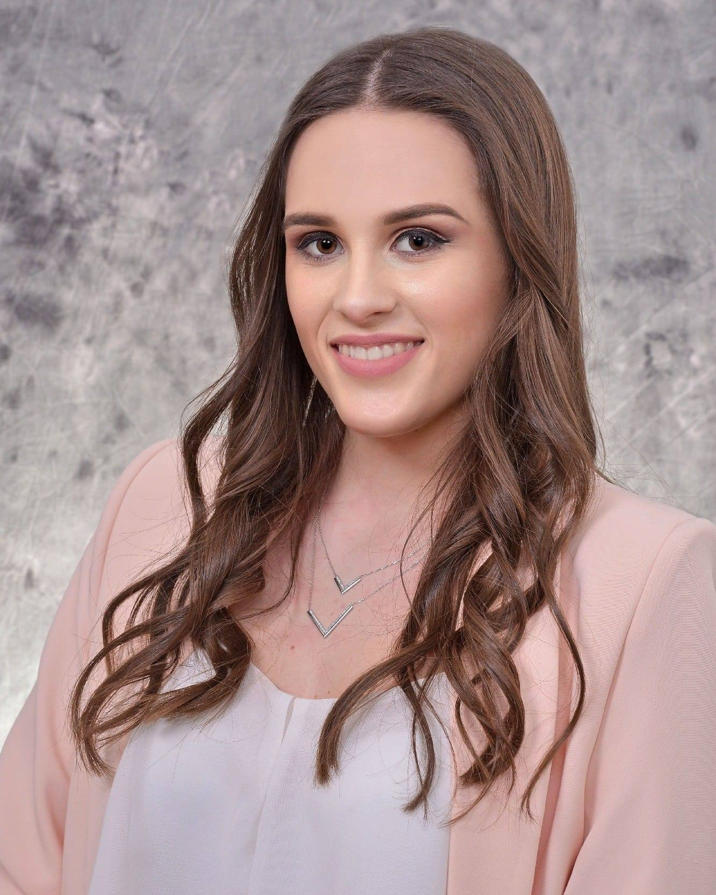

Здраво!
Јас сум Сандра Петрушевска. Родена сум во Куманово, Македонија и сè уште живеам во Куманово. Основно образование завршив во
ООУ ,,Кочо Рацин", а средно во СОУ Гимназија ,,Гоце Делчев", на природно-математички смер, комбинација А. Образованието го продолжив
на Факултетот за електротехника и информациски технологии, при Универзитетот Св. ,,Кирил и Методиј"- Скопје и сум на смер Компјутерски технологии
и инженерство. Уште од мала сум заинтересирана за технологијата и токму затоа се одлучив за овој факултет. Инаку, јас сум
голем љубител на животни, па затоа чувам три мачки. Поминувам доста време со нив, бидејќи сакам да им посветувам внимание и можам да кажам дека сме многу поврзани, и јас со нив, но и они со мене.
Исто така, сакам да спортувам и веќе подолг период одам во теретана.
Бидејќи голем дел од денот сум пред компјутер, поради обврските од факултетот, гледам колку што можам да балансирам и да спортувам,
да водам здрав живот. Но, исто така, спортот ме релаксира, навикната сум да имам некаква активност уште од мала. Порано,
имам тренирано кошарка долг период, околу девет години. На оваа WEB страна, доколку Ве интересира, можете да дознаете кои се моите омилени нешта, да ги посетите
галеријата и блогот, да стапите во контакт со мене, а и ако имате малку време, да одговорите на неколку прашања на анкетата,
за да ми помогнете да ја подобрувам странава, за што многу би Ви била благодарна.
